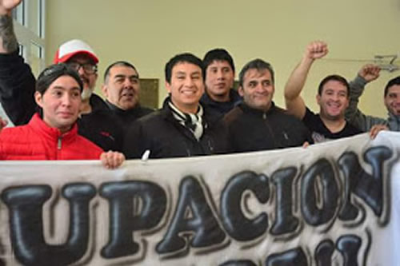

La lista opositora a la conducción regional del sindicato envió su solidaridad a las y los trabajadores despedidos de Coca Cola que sufrieron una feroz represión esta mañana mientras exigían su reincorporación.
Por Iván Marín
Esta mañana el país una vez más amaneció con las imágenes en vivo y en directo de una represión a quienes enfrentan las políticas de ajuste del gobierno de Mauricio Macri, replicado por todos los gobiernos provinciales. Así como sucedió días atrás con el "verdurazo" y los trabajadores de la Madigraf en el "Cuadernazo" en el Congreso, los y las trabajadoras de Coca Cola fueron reprimidos minutos antes de las 8 de la mañana por la policía de la Ciudad Autónoma de Buenos Aires, que responde a Horacio Rodríguez Larreta Jefe de Gobierno de la localidad y referente nacional del PRO.
La manifestación se concentró en la intersección de las avenidas Callao y Corrientes, pleno microcentro porteño. En los días previos la patronal multinacional, en acuerdo con la conducción del Sutiaga (Sindicato Unido de Trabajadores de la Industria de Aguas Gaseosas y Afines) y la cartera de Trabajo del gobierno nacional de Macri, acordaron el despido de 31 trabajadores, que según expresaron en distintos medios ya había concretado al menos una veintena.
La movilización fue acompañada por la Comisión de Mujeres de Coca Cola, integrada por esposas, compañeras e hijas de trabajadores, como así también docentes y referentes obreros, y legisladores como Myriam Bregman (PTS). La represión dejó el saldo de varios heridos/as con cortes importantes producto de los golpes, y otras personas agredidas con gas pimienta.
Ante la repercusión nacional de estos acontecimientos, la lista Verde del Sutiaga, de la regional que comprende a las provincias de Chubut, Santa Cruz y Río Negro, enviaron a Prosa Urgente un comunicado en repudio a la represión y en solidaridad con la lucha de los trabajadores. El comunicado además subraya la responsabilidad de las conducciones sindicales que no representan los derechos de los trabajadores.
Debe recordarse que el 13 de septiembre pasado esta lista ganó la elección de la Conducción Directiva del sindicato, pero que mediante fraude, y complicidad de la conducción de la Federación Argentina de Aguas Gaseosas (Fataga), el actual oficialismo sigue en el poder, ya que se atribuye el triunfo de los comicios.
Trelew vivió en el año 2.017 una situación similar a la que están sufriendo los trabajadores de la planta de Pompeya, cuando cerró la histórica embotelladora Pepsi, dejando en la calle a 50 familias. Al igual de lo que sucede con Coca Cola, en aquella oportunidad la conducción arregló con la empresa a espaldas de los obreros. Eso quedó registrado en un video que filmaron los propios trabajadores, donde Juan Levicoy (secretario general del Sutiaga) y Martín Nacarato, (abogado de Fataga), les comunican lo acordado con la patronal.
Comunicado de la lista Verde
Ante los acontecidos actos de represión por parte del gobierno de la Ciudad Autónoma de Buenos Aires a los compañeros de Coca Cola (FEMSA), la lista Verde de SUTIAGA, ganadora de las últimas elecciones celebradas el 13 de septiembre de 2018, en Chubut , Santa Cruz y Tierra de Fuego (aun no pudimos asumir porque la actual Comisión Directiva encabezada por Juan Levicoy realizó fraude con la complicidad de las autoridades de FATAGA), hacemos llegar nuestro más sincero apoyo, acompañamiento, y solidaridad en este duro momento que les toca atravesar y repudio al accionar represivo.
Como así también repudiamos de manera enérgica el hostigamiento, discriminación y persecución laboral de la cual vienen siendo víctimas a lo largo de estos años. Cabe remarcar que es triste y lamentable el accionar de ciertos dirigentes sindicales que hoy nos representan, que no solo son cómplices si no también artífices de dichas acciones contra los mismos trabajadores, más aún si sos tildado o catalogado como una potencial oposición. Creemos hoy más que nunca es menester que el pueblo obrero y la sociedad en general nos unamos para hacer frente a las políticas inescrupulosas y neoliberales que el gobierno lleva adelante, las cuales nos afectan de manera directa o indirectamente.
Sin más, les deseamos fuerzas y un fraternal saludo para que sigan adelante en esta dura batalla que hoy les toca afrontar.